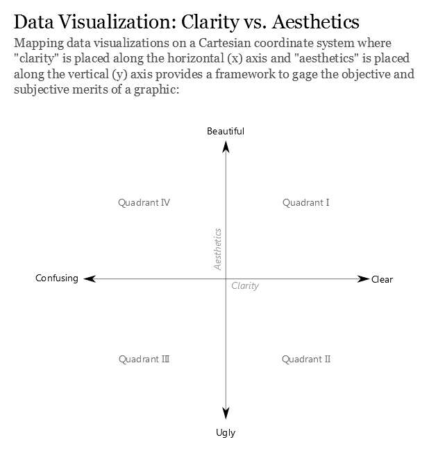

pacman::p_load(ggiraph,patchwork, DT, tidyverse,ggrepel,ggthemes,hrbrthemes,scales)Take-Home Exercise 1: Part 2
Peer Review
For this peer review, I will examine the data visualisation provided by my classmate. I will highlight three effective design principles employed in the submission as well as three areas that would benefit from further refinement. With reference to these comments, I will produce a revised version of the visualisation that incorporates the suggested enhancements.
We load the following R packages using the pacman::p_load() function:
- The code chunk below imports respopagesex2024.csv into R environment by using read_csv() function of readr package.
respopagesex2024 <- read_csv("data/respopagesex2024.csv")Original Visualization
pyramid_data <- respopagesex2024 %>%
group_by(Age, Sex) %>%
summarise(Pop = sum(Pop), .groups = "drop") %>%
mutate(Pop = ifelse(Sex == "Males", -Pop, Pop))
ggplot(pyramid_data, aes(x = Age, y = Pop, fill = Sex)) +
geom_bar(stat = "identity") +
coord_flip() +
scale_y_continuous(labels = abs) +
labs(title = "Singapore Population Pyramid (2024)",
x = "Age", y = "Population",
fill = "Sex") +
theme_minimal()
Quadrant
The original visualisation belongs in Quadrant IV because, although its dual colour palette and minimalist design deliver strong visual appeal, the axis is rendered unreadable by the overcrowded age labels and the lack of numeric annotations means the exact counts cannot be determined.
Good Points
The use of a distinct colour for each sex allows the viewer to tell male and female distributions apart immediately.
Mirroring the bars around a central axis correctly emphasises the symmetry of a population pyramid and supports side-by-side comparison.
A minimal grid and lack of decorative elements keep the focus on the data and lend the graphic a clean, professional appearance.
Critiques
Printing every single-year age label in a small font creates clutter and makes it hard to pick out particular groups, grouping into five- or ten-year bands would improve readability.
By showing annual counts rather than cohort aggregates, the pyramid’s outline becomes jagged, emphasising minor fluctuations instead of revealing the overall demographic shape.
The plot relies solely on gridlines for reading counts, with no data labels or annotations on the bars themselves. This forces viewers to estimate values mentally rather than see them at a glance.
Refined Visualization
df_5yr <- respopagesex2024 %>%
mutate(
AgeNum = case_when(
Age == "90_and_Over" ~ 90,
TRUE ~ as.numeric(Age)
)
) %>%
mutate(
AgeGroup = cut(
AgeNum,
breaks = c(seq(0, 90, by = 5), Inf),
right = FALSE,
include.lowest = TRUE,
labels = c(
"0 to 4", "5 to 9", "10 to 14", "15 to 19",
"20 to 24", "25 to 29", "30 to 34", "35 to 39",
"40 to 44", "45 to 49", "50 to 54", "55 to 59",
"60 to 64", "65 to 69", "70 to 74", "75 to 79",
"80 to 84", "85 to 89", "90 plus"
)
)
) %>%
complete(AgeGroup, Sex = c("Males", "Females"), fill = list(Pop = 0)) %>%
group_by(AgeGroup, Sex) %>%
summarise(Pop = sum(Pop), .groups = "drop") %>%
mutate(
Direction = if_else(Sex == "Males", -Pop, Pop),
Tooltip = paste0(Sex, "\n", AgeGroup, ": ", comma(Pop)),
data_id = paste(Sex, AgeGroup)
)
p <- ggplot(
df_5yr,
aes(
x = AgeGroup,
y = Direction,
fill = Sex,
tooltip = Tooltip,
data_id = data_id
)
) +
geom_col_interactive(width = 0.8) +
coord_flip(clip = "on") +
scale_y_continuous(
breaks = seq(-400000, 400000, by = 200000),
labels = ~ comma(abs(.x)),
limits = c(-400000, 400000),
expand = c(0, 0)
) +
scale_x_discrete(drop = FALSE) +
scale_fill_manual(values = c("Females" = "#F8766D", "Males" = "#00BFC4")) +
labs(
title = "Singapore Population Pyramid by 5-Year Age Bands (2024)",
x = "Age Group",
y = "Number of Residents",
fill = "Sex"
) +
theme_minimal() +
theme(
axis.title.y = element_text(margin = margin(r = 15)),
axis.title.x = element_text(margin = margin(t = 15))
)
girafe(
ggobj = p,
width_svg = 8, height_svg = 6,
options = list(
opts_hover(css = "opacity:1;fill-opacity:1;"),
opts_hover_inv(css = "opacity:0.2;")
)
)Original vs Make Over
Interactive Hover Focus
Original: Static bars offer no tooltip or focus.
Revised: Hovering highlights one bar in full opacity with an on-hover tooltip, greying out all others.
Why better: Interactivity directs attention precisely to the data point of interest and reveals exact counts without overloading the static display.
Age-Group Aggregation
Original: Every single year from 0 to 90+ is shown, leading to dozens of tiny, overlapping bars and labels.
Revised: Ages are grouped into 5-year bands , cutting the number of categories by more than two-thirds.
Why better: Fewer, broader bands greatly reduce visual clutter and allow the reader to grasp the overall demographic shape at a glance.